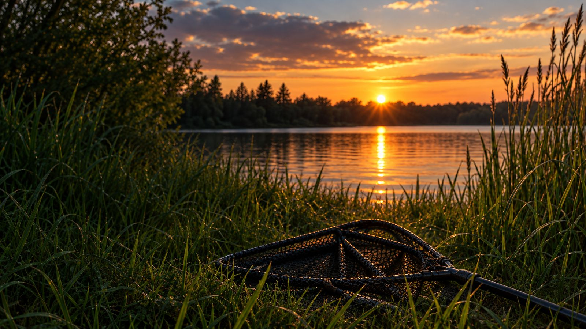
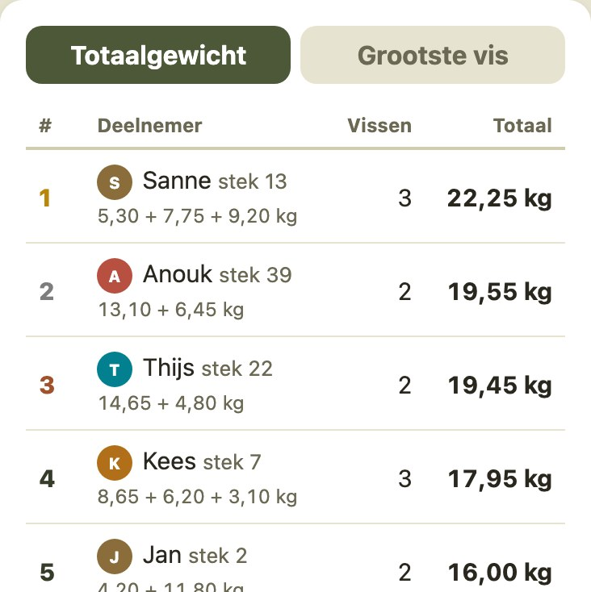
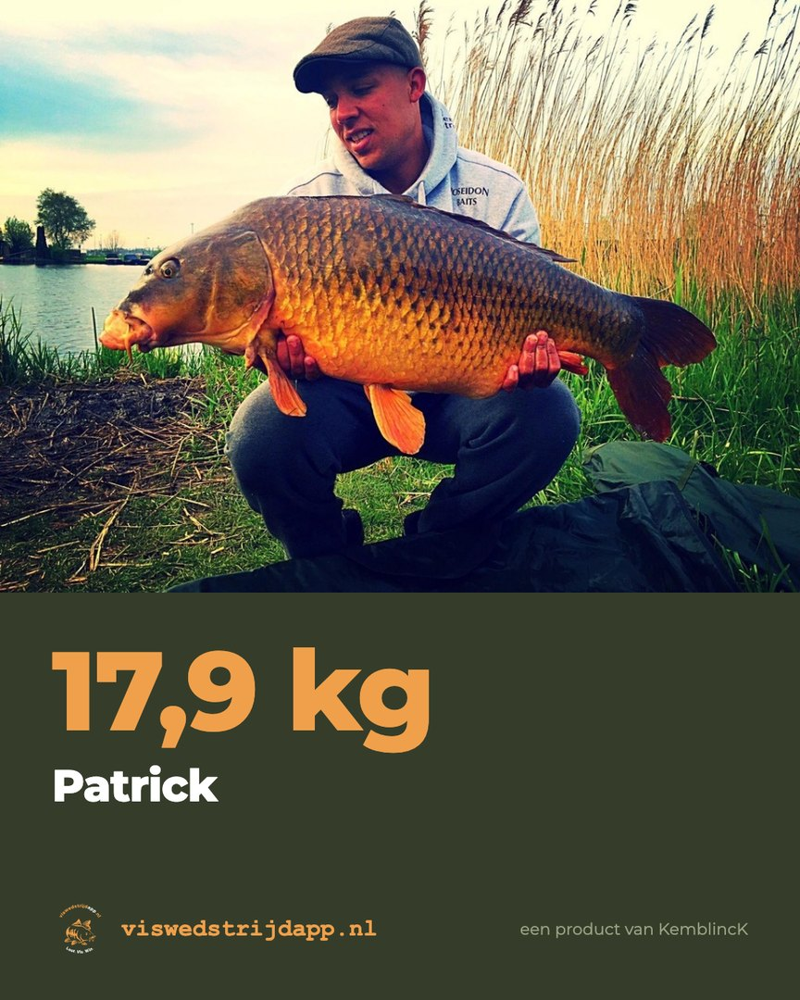
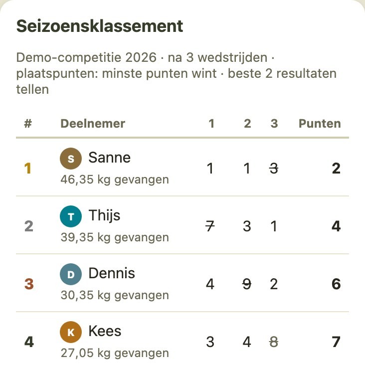
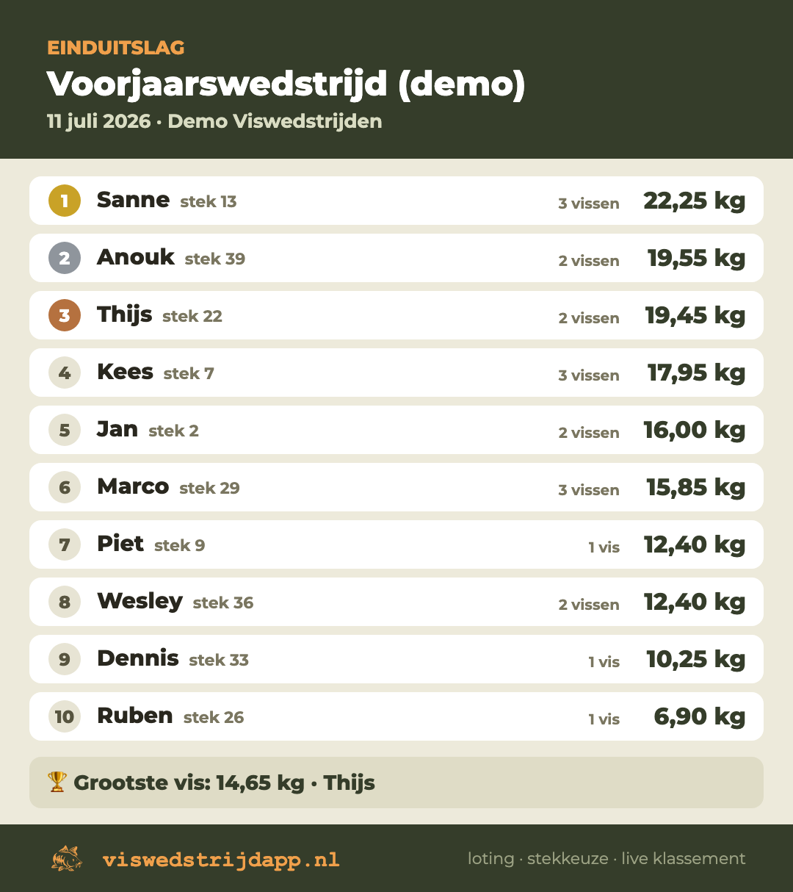
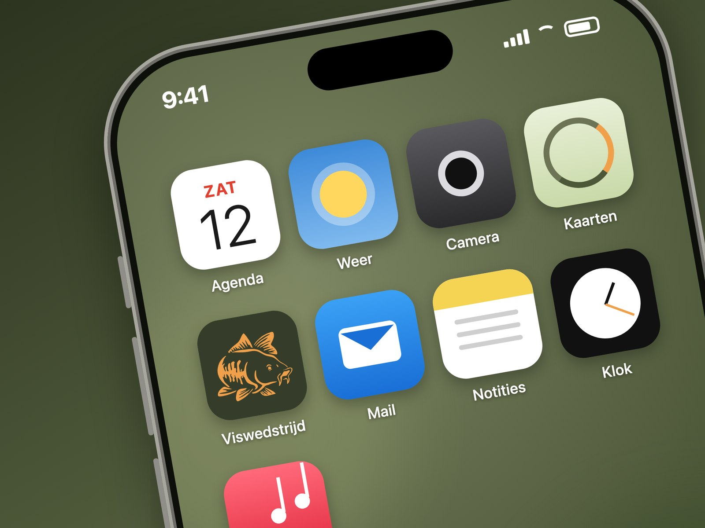

Jullie wedstrijd.
Alles geregeld.
Van loting tot live klassement. Voor je vereniging, viswater of vriendengroep.
Deelnemen met een code en je naam. Geen account, geen App Store.

De Carpclassic Nootdorp, van loting tot uitslag
September 2026, de NPHV aan de Plas van der Ende: 25 uur vissen, een loting via de telefoon, zones kiezen op de dieptekaart en elke karper met foto het klassement in. Thuis werd er vanaf ruim 100 telefoons live meegekeken, van de eerste vis op zaterdagochtend tot de weging op zondag.
“Grote complimenten voor het maken van deze app, echt een verrijking.”
Zo loopt jullie wedstrijddag
De organisator maakt de wedstrijd aan en deelt de code in de groepsapp. Vissers melden zich aan met hun naam.
Loten met één druk op de knop, om de beurt een stek kiezen op de kaart, en elke vangst met foto en gewicht vastleggen.
Op de eindtijd staat de uitslag vast. Iedereen krijgt een melding met de winnaar en de tijd van de prijsuitreiking.

Van lotnummer naar jullie eigen stek
Eén druk op de knop bepaalt de kiesvolgorde. Iedereen ziet zijn lotnummer op de eigen telefoon en kiest om de beurt een plek. Individueel of in koppels: twee aangrenzende stekken, ieder een eigen score.
-
Een duidelijke kiesvolgordeIedereen kiest om de beurt en ziet wie er al geweest is.
-
Jullie water, herkenbaar in beeldDe echte dieptekaart met steknummers en zones. Vrij is wit, bezet is rood, jouw plek is groen.
Geen eigen kaart? Dan richten we een standaardkaart met zones voor jullie in.

De vangst binnen. Iedereen bijgepraat.
Vangst registreren duurt 20 seconden: gewicht invullen, foto erbij, klaar. De vangst telt direct mee en iedereen krijgt een pushmelding. Na de eindtijd blokkeert de server elke registratie, dus een discussie over "net op tijd" bestaat niet meer.
-
Foto en gewichtElke vangst met bewijs in de lijst.
-
Direct de tussenstandTotaalgewicht en grootste vis, live bijgewerkt.
-
Thuis live meekijkenMet een aparte kijkcode: klassement, foto's en wie waar zit.


Foto's van BivvyBrothers. Valt het bereik weg? Dan bewaart de app de vangst op de telefoon en verstuurt hem zodra er weer verbinding is.
Ook het seizoen telt mee
Koppel wedstrijden aan een seizoen en de app rekent de stand automatisch uit, volgens de landelijke wedstrijdreglementen: plaatspunten of totaalgewicht, aftrekwedstrijden en nette regels voor niet-vangers en gemiste wedstrijden. Per seizoen en per wedstrijd instelbaar.

De uitslag zo in de groepsapp
De einduitslag, de seizoensstand en elke gevangen vis deel je met één tik als afbeelding op WhatsApp, Instagram of Facebook, met foto, gewicht en wedstrijdnaam erop. En na het aanmaken van een wedstrijd staat de uitnodiging met code en link klaar voor de groepsapp.

Makkelijk meedoen. Zorgvuldig met gegevens.
Zonder gedoe
- Een code en je naam zijn genoeg
- Geen App Store nodig, wel als icoon op je beginscherm
- Je vangst wordt bewaard bij tijdelijk slecht bereik
- De organisator maakt een wedstrijd in een minuut aan
Privacy
- Geen locatie-tracking en geen vangstenlogboek
- Vangsten alleen zichtbaar met de wedstrijd- of kijkcode
- Een vangstfoto gebruiken we alleen als promotie met toestemming van de visser
- Geen advertenties, geen doorverkoop; de gegevens blijven van de club
Geen accounts, geen App Store
De app werkt op iPhone en Android en komt als icoon op het beginscherm, zodat meldingen binnenkomen. Deelnemers loggen in met een wedstrijdcode en hun naam; hun persoonlijke code kunnen ze in de wachtwoorden van hun telefoon bewaren.

Van jullie kaart naar de eerste wedstrijd
Stuur jullie waterkaart en wedstrijdregels. Een dieptescan, een oude kaart of een schets met pen.
Wij digitaliseren de kaart en zetten jullie eigen omgeving klaar op viswedstrijdapp.nl.
Samen testen we alles: loting, vangst doorgeven en het klassement.
Jullie zijn klaar voor de eerste wedstrijd. Wij blijven op de achtergrond voor vragen.
Kaart en inrichting zijn inbegrepen vanaf 5 personen. Minder dan 5 personen? Neem contact op, dan kijken we samen. Voor verenigingen en viswaterbeheerders met meerdere wedstrijden per jaar is er een jaarabonnement; vraag het prijzenblad aan.
Nog vragen?
Moeten deelnemers iets installeren?
Nee. De app werkt direct in de browser via een link of code. Wie wil, zet hem als icoon op het beginscherm; dat raden we aan voor pushmeldingen. Een App Store of Play Store komt er niet aan te pas.
Wat als het bereik wegvalt?
Bij een korte onderbreking lopen de klok en het klassement gewoon door en haalt de app de tussenstand daarna vanzelf weer op. Val je helemaal weg, dan bewaart de app je vangst met foto op je telefoon en verstuurt hem zodra er weer verbinding is. Je ziet in de app staan wat er nog in de wachtrij staat.
Kunnen we onze eigen regels gebruiken?
Ja. Per wedstrijd stel je de regels in en die zijn voor iedereen zichtbaar in de app. Voor de seizoenscompetitie kies je per seizoen de telling (plaatspunten of totaalgewicht), aftrekwedstrijden en de regels voor niet-vangers en gemiste wedstrijden.
Wat kost een eigen omgeving?
Voor een vriendengroep of een losse wedstrijd: vanaf € 10 per persoon per wedstrijd, met kaart en inrichting inbegrepen vanaf 5 personen. Minder dan 5 personen? Neem contact op. Voor verenigingen en viswaterbeheerders met meerdere wedstrijden per jaar is er een jaarabonnement, afhankelijk van het aantal deelnemers en of jullie eigen water gedigitaliseerd wordt.
Voor welke wedstrijden is de app geschikt?
Voor viswedstrijden op gewicht: karper, witvis, individueel of in koppels, losse wedstrijden of een hele seizoenscompetitie. Van verenigingswedstrijd tot een onderlinge wedstrijd met vrienden. Vissen twee deelnemers samen aan één stek maar tellen ze apart mee? Dan melden ze zich als duo aan: samen loten, samen zitten, ieder een eigen score.
Ook voor jullie wedstrijd?
Voor verenigingen, viswaters en vriendengroepen. Iedere organisatie krijgt een eigen omgeving met eigen waterkaart, loting en klassement.